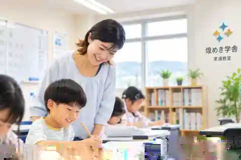

KIRAMEKI GAKUSHA / HIGASHIURA
学ぶって、
ちょっと楽しい。
「わかった！」が増えると、勉強はもっと身近になる。先生と子どもの距離が近い、東浦の学び場です。


うれしい。
先生と話す。✳考えてみる。✳できた！✳またやってみる。✳先生と話す。
A DAY AT KIRAMEKI
「できた！」までが、
楽しい。
教えてもらうだけではなく、自分で考え、質問し、できた瞬間を先生と喜ぶ。学習計画と管理を大切にしながら、自主的に学ぶ力を育てます。
01 / いっしょに学ぶ02 / できたを喜ぶ
先生、
わかった！
わかった！
CHOOSE YOUR LEARNING
学び方も、
ひとつじゃない。


KAYOI-HODAI
子どもの毎日に、
塾のほうを合わせる。
月曜～土曜の開講時間なら毎日通塾OK、予約不要。部活や習い事がある日は無理せず、テスト前はたっぷり。中学生は月24時間以上の受講が基本です。
カヨイホーダイを見る ↗